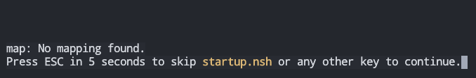

1 os-elephant-dev简介
os-elephant-dev是《操作系统-真相还原》配套的操作系统，该书详细描述了如何实现该操作系统。
使用bochs运行x86架构的os-elephant-dev操作系统。在qemu下运行时有问题，可能访问磁盘的端口有问题。
bochs环境配置推荐博客：https://blog.csdn.net/kanshanxd/article/details/130689471?spm=1001.2014.3001.5501
给第二个磁盘分区的时候使用该命令可达到与书中一样的效果：fdisk -c=dos -u=cylinders hd80M.img
bochs配置文件示例：
megs : 32
romimage: file=/home/huloves/repositories/os-loongson/bochs/share/bochs/BIOS-bochs-latest
vgaromimage: file=/home/huloves/repositories/os-loongson/bochs/share/bochs/VGABIOS-lgpl-latest
boot: disk
log: bochs.out
mouse:enabled=0
keyboard:keymap=/home/huloves/repositories/os-loongson/bochs/share/bochs/keymaps/x11-pc-us.map
ata0: enabled=1, ioaddr1=0x1f0, ioaddr2=0x3f0, irq=14
ata0-master: type=disk, path="hd60M.img", mode=flat, cylinders=6, heads=16, spt=63
ata0-slave: type=disk, path="hd80M.img", mode=flat, cylinders=101, heads=16, spt=63
2 部署工作环境
创建os-loongson目录，进入os-loongson中。
当前工作目录：os-loongson/
2.1 配置qemu运行环境
在os-loongson中创建qemu目录，其中放置需要使用的QEMU。
QEMU是一个通用的开源机器模拟器和虚拟器。QEMU Main Documentation
开始搭建loongarh架构的qemu运行环境。
下载qemu-system-loongarch64、loongarch_bios_0310_debug.bin和efi-virtio.rom到os-loongson/qemu中。
在os-loongson/qemu.目录下使用下述命令试运行：
cd qemu
./qemu-system-loongarch64 -m 4G -smp 1 -bios ./loongarch_bios_0310_debug.bin -vga none -nographic
efi-virtio.rom - qemu需要使用的rom file。
loongarch_bios_0310_debug.bin. loongarch架构UEFI bios二进制程序。
试运行截图：

2.2 下载编译工具链
在os-loongson中创建toolchains目录，其中放置需要用到的工具链。
下载工具链包loongarch64-clfs-6.3-cross-tools-gcc-full.tar.xz到os-loongson下，并解压到os-loongson/toolchains中，解压命令如下：
tar -xvf loongarch64-clfs-6.3-cross-tools-gcc-full.tar.xz -C toolchains
3 龙芯启动部分程序，向内核迈进
从计算机的启动到执行C语言程序大致流程为：1.计算机上电 -> 2.运行ROM程序（BIOS、UEFI） -> 3.从ROM程序接管计算机控制，进行初步设置 -> 4.运行C语言程序。这其中内核编程人员从第3步开始需要编写程序，且这部分代码基本上为直接操作寄存器进行设置，所以一般使用汇编代码编写。当对计算机进行内核所需的初始化之后，跳转到C语言程序部分开始执行后续内容。后续内容中一般只有少部分代码需要直接操作寄存器，所以后续直接操作寄存器的内容一般使用内敛汇编完成。
如果后续内容中存在需要大量操作寄存器的部分，也会直接编写汇编程序。例如例外和中断处理、上下文切换。
本章龙芯启动部分程序的内容为：从ROM程序开始接管计算机控制，进行初步设置，然后跳转至C语言程序。C语言程序中使用串口输出功能，输出hello os-loongson。